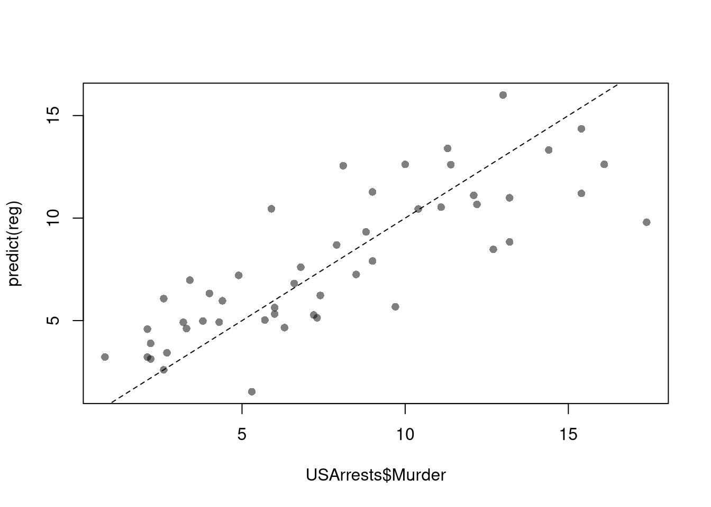
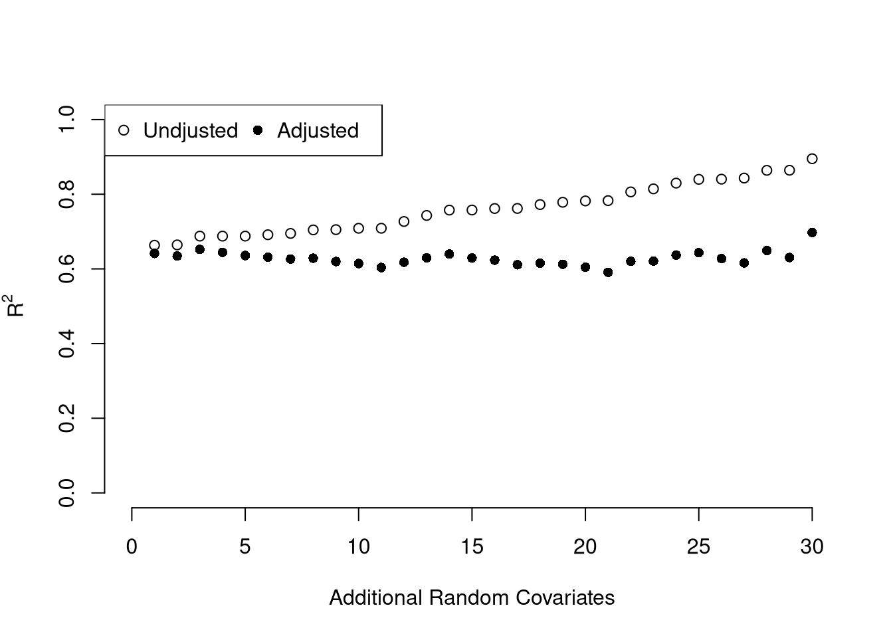
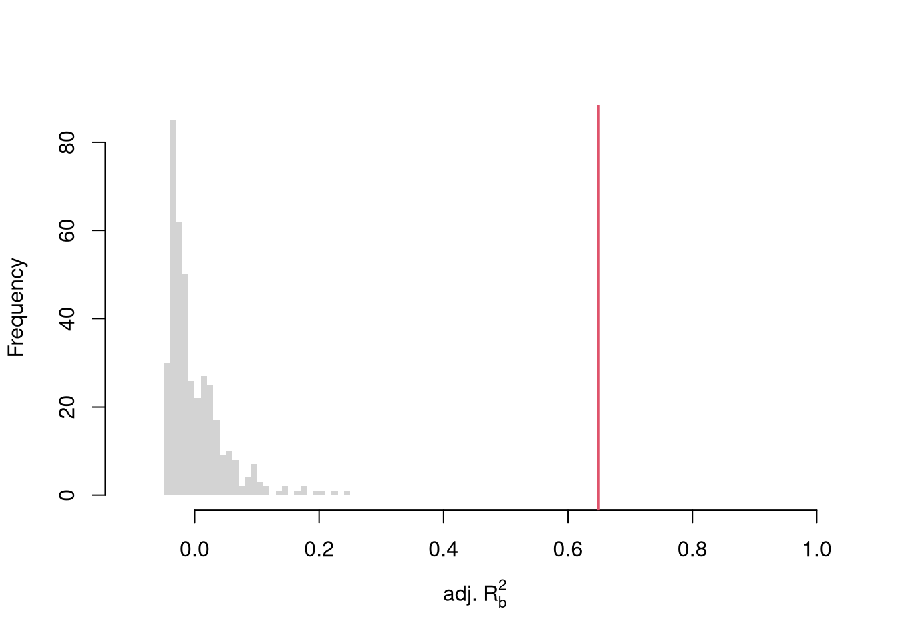
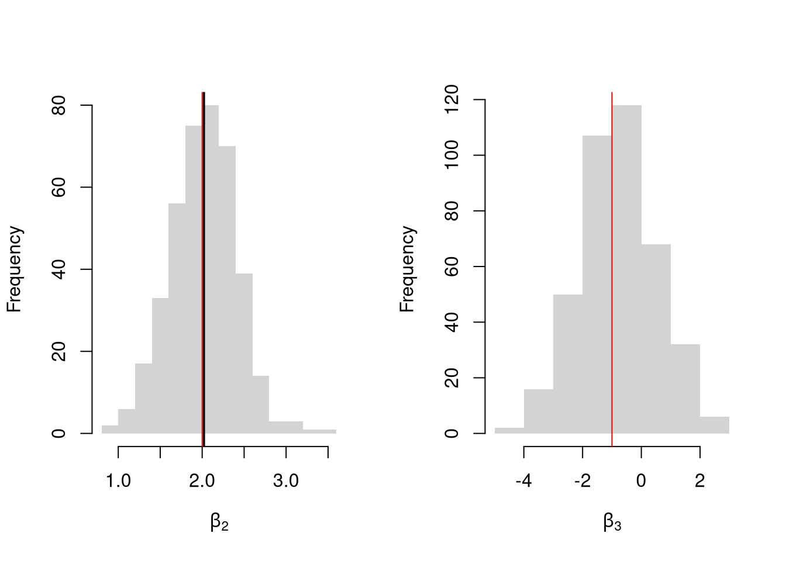
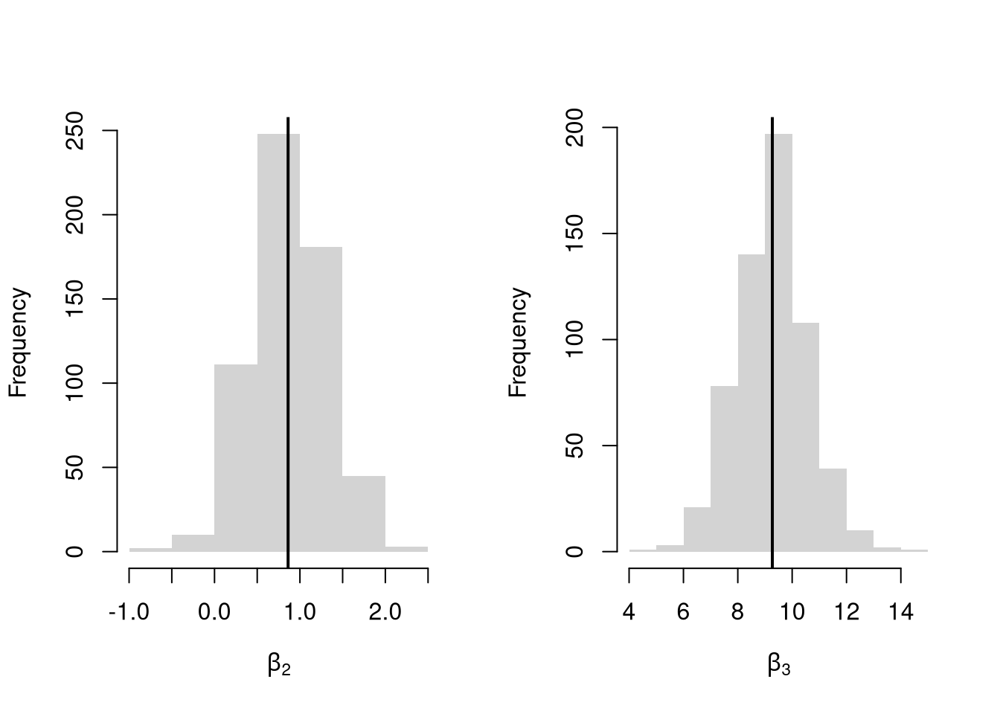

Code
# Check
reg <- lm(Murder~Assault+UrbanPop, data=USArrests)
coef(reg)
## (Intercept) Assault UrbanPop
## 3.20715340 0.04390995 -0.04451047We often want to know the relationship between one outcome variable \(\hat{Y}_{i}\) and \(K\) explanatory variables: \(\hat{X}_{1i}, \hat{X}_{2i},... \hat{X}_{Ki}\). For historical reasons, we start by fitting a linear model to data.
\[\begin{eqnarray} \hat{Y}_{i}=b_0 + b_1 \hat{X}_{i1}+ b_2 \hat{X}_{i2}+\ldots+b_K \hat{X}_{iK}+e_i \end{eqnarray}\] Our objective is \[\begin{eqnarray} \min_{b_0 ~~ b_1 ~~... ~~ b_{K}} \sum_{i=1}^{n} e_{i}^2, \end{eqnarray}\] which yields the best fitting coefficients \(b_0^{*} ~~ b_1^{*} ~~... ~~ b_{K}^{*}\).
# Check
reg <- lm(Murder~Assault+UrbanPop, data=USArrests)
coef(reg)
## (Intercept) Assault UrbanPop
## 3.20715340 0.04390995 -0.04451047To measure the ``Goodness of fit’’ of the model, we can again plot our predictions.
plot(USArrests$Murder, predict(reg), pch=16, col=grey(0,.5))
abline(a=0,b=1, lty=2)
We can also again compute sums of squared errors. Adding random data may sometimes improve the fit, however, so we adjust the \(\hat{R}^2\) by the number of covariates \(K\). \[\begin{eqnarray} \hat{R}_{yY}^2 = \frac{\hat{ESS}}{\hat{TSS}}=1-\frac{\hat{RSS}}{\hat{TSS}}\\ \hat{R}^2_{\text{adj.}} = 1-\frac{n-1}{n-K}(1-\hat{R}_{yY}^2) \end{eqnarray}\]
ksims <- 1:30
for(k in ksims){
USArrests[,paste0('R',k)] <- runif(nrow(USArrests),0,20)
}
reg_sim <- lapply(ksims, function(k){
rvars <- c('Assault','UrbanPop', paste0('R',1:k))
rvars2 <- paste0(rvars, collapse='+')
reg_k <- lm( paste0('Murder~',rvars2), data=USArrests)
})
R2_sim <- sapply(reg_sim, function(reg_k){ summary(reg_k)$r.squared })
R2adj_sim <- sapply(reg_sim, function(reg_k){ summary(reg_k)$adj.r.squared })
plot.new()
plot.window(xlim=c(0,30), ylim=c(0,1))
points(ksims, R2_sim)
points(ksims, R2adj_sim, pch=16)
axis(1)
axis(2)
mtext(expression(R^2),2, line=3)
mtext('Additional Random Covariates', 1, line=3)
legend('topleft', horiz=T,
legend=c('Undjusted', 'Adjusted'), pch=c(1,16))
So far, we have discussed cardinal data where the difference between units always means the same thing: e.g., \(4-3=2-1\). There are also factor variables
To analyze either factor, we often convert them into indicator variables or dummies; \(\hat{D}_{c}=\mathbf{1}( \text{Factor} = c)\). One common case is if you have observations of individuals over time periods, then you may have two factor variables. An unordered factor that indicates who an individual is; for example \(\hat{D}_{i}=\mathbf{1}( \text{Individual} = i)\), and an order factor that indicates the time period; for example \(\hat{D}_{t}=\mathbf{1}( \text{Time} \in [\text{month}~ t, \text{month}~ t+1) )\). There are many other cases you see factor variables, including spatial ID’s in purely cross sectional data.
Be careful not to handle categorical data as if they were cardinal. E.g., generate city data with Leipzig=1, Lausanne=2, LosAngeles=3, … and then include city as if it were a cardinal number (that’s a big no-no). The same applied to ordinal data; PopulationLeipzig=2, PopulationLausanne=3, PopulationLosAngeles=1.
N <- 1000
x <- runif(N,3,8)
e <- rnorm(N,0,0.4)
fo <- factor(rbinom(N,4,.5), ordered=T)
fu <- factor(rep(c('A','B'),N/2), ordered=F)
dA <- 1*(fu=='A')
y <- (2^as.integer(fo)*dA )*sqrt(x)+ 2*as.integer(fo)*e
dat_f <- data.frame(y,x,fo,fu)With factors, you can still include them in the design matrix of an OLS regression. For example, \[\begin{eqnarray} \hat{Y}_{i} = b_{0} + \hat{X}_{i} b_{1} + \sum_{t}\hat{D}_{t}b_{t} \end{eqnarray}\] When, as commonly done, the factors are modeled as being additively seperable, they are modeled “fixed effects”.1 Simply including the factors into the OLS regression yields a “dummy variable” fixed effects estimator. The fixed effects and dummy variable approach are algebraically equal: same coefficients and same residuals. (See Hansen Econometrics, Theorem 17.1)
library(fixest)
fe_reg1 <- feols(y~x|fo+fu, dat_f)
coef(fe_reg1)
## x
## 1.277069
fixef(fe_reg1)[1:2]
## $fo
## 0 1 2 3 4
## 7.649410 9.474876 13.776131 22.714953 44.519527
##
## $fu
## A B
## 0.00000 -23.22374
# Compare Coefficients
fe_reg0 <- lm(y~-1+x+fo+fu, dat_f)
coef( fe_reg0 )
## x fo0 fo1 fo2 fo3 fo4 fuB
## 1.277069 7.649410 9.474876 13.776131 22.714953 44.519527 -23.223743With fixed effects, we can also compute averages for each group: \(\hat{M}_{Yt}=\sum_{i}^{n_{t}} \hat{Y}_{it}/n_{t}\), where each period \(t\) has \(n_{t}\) observations denoted \(\hat{Y}_{it}\). We can then construct a between estimator: \(\hat{M}_{Yt} = b_{0} + \hat{M}_{Xt} b_{1}\). Or we can subtract the average from each group to construct a within estimator: \((\hat{Y}_{it} - \hat{M}_{Yt}) = (\hat{X}_{it}-\hat{M}_{Xt})b_{1}\).
Above, we computed the coefficient \(\hat{B}\) for a particular sample: \(\hat{X}_{1i}, \hat{X}_{2i}, ..., \hat{Y}_{i}\). We now seek to know how much the best-fitting coefficients \(B^{*}\) varies from sample to sample. I.e., \(\hat{B}\) is our estimate and we want to know the variance of our estimator: \(\mathbb{V}(B^{*})\). To estimate this variability, we can use the same data-driven methods introduced previously.
As before, we can also conduct independent hypothesis tests using t-values. However, we can also conduct joint tests that account for interdependancies in our estimates. For example, to test whether two coefficients both equal \(0\), we bootstrap the joint distribution of coefficients.
# Bootstrap SE's
boots <- 1:399
boot_regs <- lapply(boots, function(b){
b_id <- sample( nrow(USArrests), replace=T)
xy_b <- USArrests[b_id,]
reg_b <- lm(Murder~Assault+UrbanPop, dat=xy_b)
})
boot_coefs <- sapply(boot_regs, coef)
# Recenter at 0 to impose the null
#boot_means <- rowMeans(boot_coefs)
#boot_coefs0 <- sweep(boot_coefs, MARGIN=1, STATS=boot_means)boot_coef_df <- as.data.frame(cbind(ID=boots, t(boot_coefs)))
fig <- plotly::plot_ly(boot_coef_df,
type = 'scatter', mode = 'markers',
x = ~UrbanPop, y = ~Assault,
text = ~paste('<b> bootstrap dataset: ', ID, '</b>',
'<br>Coef. Urban :', round(UrbanPop,3),
'<br>Coef. Murder :', round(Assault,3),
'<br>Coef. Intercept :', round(`(Intercept)`,3)),
hoverinfo='text',
showlegend=F,
marker=list( color='rgba(0, 0, 0, 0.5)'))
fig <- plotly::layout(fig,
showlegend=F,
title='Joint Distribution of Coefficients (under the null)',
xaxis = list(title='UrbanPop Coefficient'),
yaxis = list(title='Assualt Coefficient'))
figWe can also use an \(F\) test for any \(q\) hypotheses. Specifically, when \(q\) hypotheses restrict a model, the degrees of freedom drop from \(k_{u}\) to \(k_{r}\) and the residual sum of squares \(\hat{RSS}=\sum_{i}(\hat{Y}_{i}-\hat{y}_{i})^2\) typically increases. We compute the statistic \[\begin{eqnarray} \hat{F}_{q} = \frac{(\hat{RSS}_{r}-\hat{RSS}_{u})/(k_{u}-k_{r})}{\hat{RSS}_{u}/(n-k_{u})} \end{eqnarray}\]
If you test whether all \(K\) variables are significant, the restricted model is a simple intercept and \(\hat{RSS}_{r}=\hat{TSS}\), and \(\hat{F}_{q}\) can be written in terms of \(\hat{R}^2\): \(\hat{F}_{K} = \frac{\hat{R}^2}{1-\hat{R}^2} \frac{n-K}{K-1}\). The first fraction is the relative goodness of fit, and the second fraction is an adjustment for degrees of freedom (similar to how we adjusted the \(\hat{R}^2\) term before).
To conduct a hypothesis test, first compute a null distribution by randomly reshuffling the outcomes and recompute the F statistic, and then compare how often random data give something as extreme as your initial statistic. For some intuition on this F test, examine how the adjusted \(\hat{R}^2\) statistic varies with bootstrap samples.
# Bootstrap under the null
boots <- 1:399
boot_regs0 <- lapply(boots, function(b){
# Generate bootstrap sample
xy_b <- USArrests
b_id <- sample( nrow(USArrests), replace=T)
# Impose the null
xy_b$Murder <- xy_b$Murder[b_id]
# Run regression
reg_b <- lm(Murder~Assault+UrbanPop, dat=xy_b)
})
# Get null distribution for adjusted R2
R2adj_sim0 <- sapply(boot_regs0, function(reg_k){
summary(reg_k)$adj.r.squared })
hist(R2adj_sim0, xlim=c(-.1,1), breaks=25, border=NA,
main='', xlab=expression('adj.'~R[b]^2))
# Compare to initial statistic
abline(v=summary(reg)$adj.r.squared, lwd=2, col=2)
Note that hypothesis testing is not to be done routinely, as additional complications arise when testing multiple hypothesis sequentially.
Under some additional assumptions \(F_{q}\) follows an F-distribution. For more about F-testing, see https://online.stat.psu.edu/stat501/lesson/6/6.2 and https://www.econometrics.blog/post/understanding-the-f-statistic/
Under some additional parametric assumptions about the data generating process, the F-statistic follows an \(F\) distribution. This case is well-studied historically, often under the title Analysis of Variance (ANOVA). An important case corresponds to the restricted model having no explanatory variables (i.e., our model is \(\hat{Y}_{i}=b_{0}\) and our predictions are \(\hat{y}_{i}=\hat{M}_{Y}\)).
reg_full <- lm(Murder ~ Assault + UrbanPop + Rape, data = USArrests)
reg_none <- lm(Murder ~ 1, dat=USArrests)
anova(reg_none, reg_full)
## Analysis of Variance Table
##
## Model 1: Murder ~ 1
## Model 2: Murder ~ Assault + UrbanPop + Rape
## Res.Df RSS Df Sum of Sq F Pr(>F)
## 1 49 929.55
## 2 46 304.83 3 624.72 31.424 3.322e-11 ***
## ---
## Signif. codes: 0 '***' 0.001 '**' 0.01 '*' 0.05 '.' 0.1 ' ' 1
# Manual F-test
rss0 <- sum(resid(reg_none)^2) # restricted
rss1 <- sum(resid(reg_full)^2) # unrestricted
df0 <- df.residual(reg_none)
df1 <- df.residual(reg_full)
F <- ((rss0 - rss1)/(df0-df1)) / (rss1/df1) # observed F stat
p <- 1-pf(F, df0-df1, df1) # where F falls in the F-distribution
cbind(F, p)
## F p
## [1,] 31.42399 3.322431e-11Whether you take a parametric or nonparametric approach to hypothesis testing, you can easily test whether variables are additively separable with an F test.
# Empirical Example
reg1 <- lm(Murder~Assault+UrbanPop, USArrests)
reg2 <- lm(Murder~Assault*UrbanPop, USArrests)
anova(reg1, reg2)
## Analysis of Variance Table
##
## Model 1: Murder ~ Assault + UrbanPop
## Model 2: Murder ~ Assault * UrbanPop
## Res.Df RSS Df Sum of Sq F Pr(>F)
## 1 47 312.87
## 2 46 300.93 1 11.944 1.8258 0.1832## # Simulation Example
## N <- 1000
## x <- runif(N,3,8)
## e <- rnorm(N,0,0.4)
## fo <- factor(rbinom(N,4,.5), ordered=T)
## fu <- factor(rep(c('A','B'),N/2), ordered=F)
## dA <- 1*(fu=='A')
## y <- (2^as.integer(fo)*dA )*sqrt(x)+ 2*as.integer(fo)*e
## dat_f <- data.frame(y,x,fo,fu)
##
## reg0 <- lm(y~-1+x+fo+fu, dat_f)
## reg1 <- lm(y~-1+x+fo*fu, dat_f)
## reg2 <- lm(y~-1+x*fo*fu, dat_f)
##
## anova(reg0, reg2)
## anova(reg0, reg1, reg2)Notice that we have gotten pretty far without actually trying to meaningfully interpret regression coefficients. That is because the above procedure will always give us number, regardless as to whether the true data generating process is linear or not. So, to be cautious, we have been interpreting the regression outputs while being agnostic as to how the data are generated. We now consider a special situation where we know the data are generated according to a linear process and are only uncertain about the parameter values.
If the data generating process is truly linear then we have a famous result that lets us attach a simple interpretation of OLS coefficients as unbiased estimates of the effect of \(X\). For example, generate a simulated dataset with \(30\) observations and two exogenous variables. Assume the following relationship: \(Y_{i} = \beta_0 + \beta_1 X_{i1} + \beta_2 X_{i2} + \epsilon_{i}\) where the variables and the error term are realizations of the following data generating processes:
N <- 30
B <- c(10, 2, -1)
x1 <- runif(N, 0, 5)
x2 <- rbinom(N,1,.7)
X <- cbind(1,x1,x2)
e <- rnorm(N,0,3)
Y <- X%*%B + e
dat <- data.frame(Y,X)
coef(lm(Y~x1+x2, data=dat))
## (Intercept) x1 x2
## 9.430321 2.136959 -1.553315Simulate the distribution of coefficients under a correctly specified model. Interpret the average.
N <- 30
B <- c(10, 2, -1)
Coefs <- sapply(1:400, function(sim){
x1 <- runif(N, 0, 5)
x2 <- rbinom(N,1,.7)
X <- cbind(1,x1,x2)
e <- rnorm(N,0,3)
Y <- X%*%B + e
dat <- data.frame(Y,x1,x2)
coef(lm(Y~x1+x2, data=dat))
})
par(mfrow=c(1,2))
for(i in 2:3){
hist(Coefs[i,], xlab=bquote(beta[.(i)]), main='', border=NA)
abline(v=mean(Coefs[i,]), lwd=2)
abline(v=B[i], col=rgb(1,0,0))
}
Many economic phenomena are nonlinear, even when including potential transforms of \(Y\) and \(X\). Sometimes the linear model may still be a good or even great approximation. But sometimes not, and it is hard to know ex-ante. Examine the distribution of coefficients under this mispecified model and try to interpret the average.
N <- 30
Coefs <- sapply(1:600, function(sim){
x2 <- runif(N, 0, 5)
x3 <- rbinom(N,1,.7)
e <- rnorm(N,0,3)
Y <- 10*x3 + 2*log(x2)^x3 + e
dat <- data.frame(Y,x2,x3)
coef(lm(Y~x2+x3, data=dat))
})
par(mfrow=c(1,2))
for(i in 2:3){
hist(Coefs[i,], xlab=bquote(beta[.(i)]), main='', border=NA)
abline(v=mean(Coefs[i,]), col=1, lwd=2)
}
In general, you can interpret your regression coefficients as “adjusted correlations”. There are (many) tests for whether the relationships in your dataset are actually additively separable and linear.
For OLS, see
To derive OLS coefficients in Matrix form, see
For fixed effects, see
There are also random effects: the factor variable comes from a distribution that is uncorrelated with the regressors. This is rarely used in economics today, however, and are mostly included for historical reasons and special cases where fixed effects cannot be estimated due to data limitations.↩︎